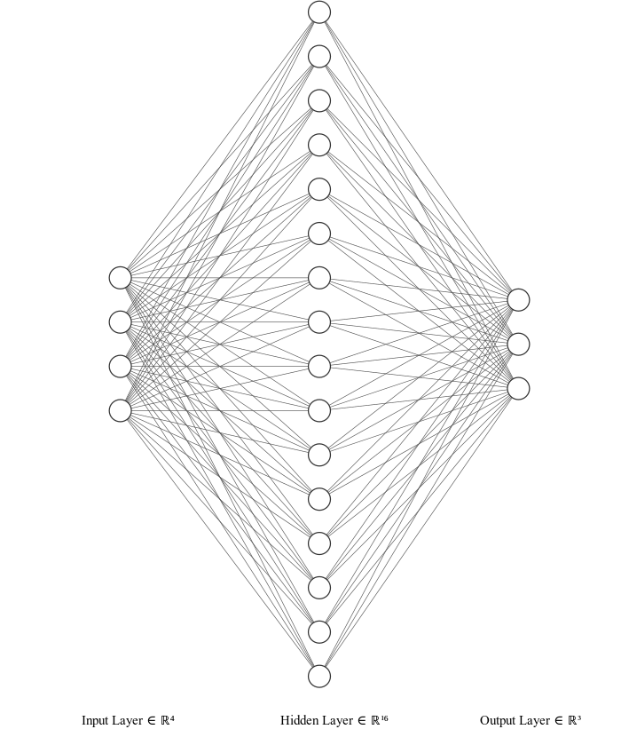

iris
dynetでirisの分類をしてみましょう
irisのデータセットはここ からダウンロードできます．
irisはアヤメの分類を行うデータセットです． ４つの情報からアヤメの種類を学習・推測するものになります．
このデータセットはパターン認識のための最もよく知られたものです． このデータセットは３つの種類のアヤメのデータがそれぞれ５０個ずつ含まれています． 一つのアヤメは他の２つと線形分離可能です．
1.データの中身
1.1 アヤメの種類
- setosa
- versicolor
- virginica
それぞれのデータが５０個ずつ含まれています．
1.2 含まれている情報
- ガク片（sepal)の幅・長さ(cm)
- 花弁（petal)の幅・長さ(cm)
1.3 情報量
- 情報数:150
- 欠損情報:無し
1.4 データの構成
- sepal length(cm)
- sepal width(cm)
- petal length(cm)
- petal width(cm)
- class:
- Iris Setosa
- Iris Versicolor
- Iris Virginica
1.5 統計
| Min | Max | Mean | Standard deviation | Class correlation | |
|---|---|---|---|---|---|
| sepal length | 4.3 | 7.9 | 5.84 | 0.83 | 0.7826 |
| sepal width | 2.0 | 4.4 | 3.05 | 0.43 | -0.4194 |
| petal length | 1.0 | 6.9 | 3.76 | 1.76 | 0.9490(high!) |
| petal width | 0.1 | 2.5 | 1.2 | 0.76 | 0.9565(high!) |
2. データセットのエンコード
データセットは下記のように文字列でラベル付されているので， これを学習でも使用できるようにone-hot表現に変換（エンコード）する必要があります．
setosa, versicolor, virginica->0,0,1
3. 実装
今回は下記のようなニューラルネットを構築します． データセットに含まれている情報は４つあるので，入力層は４ノードとなります． また，アヤメは３種類に分類されるので出力層のノード数は３であることがわかります． 残りは中間層を決定すれば良いのですが，今回は１層，１６ノードで構成することにします． この１６ノードにバイアスノードは含まれていません．計算では含まれますが， ここではわかりやすさ重視で無視します．実際はバイアスノードはあります.かっこよさ重視で下記の図にないだけです．

数式
各変数（パラメータ）のサイズは下記のとおりです．
- \boldsymbol{x} : 4 \times 1
- \boldsymbol{W^{(1)}} : 16 \times 4
- \boldsymbol{b^{(1)}} : 16 \times 1
- \boldsymbol{z^{(1)}} : 16 \times 1
- \boldsymbol{W^{(2)}} : 3 \times 16
- \boldsymbol{b^{(2)}} : 3 \times 1
- \boldsymbol{\hat{y}} : 3 \times 1
計算式（各変数の関係）は下記のとおりです．
\begin{equation}
\boldsymbol{z^{(1)}} = f^{(1)}(
\boldsymbol{W^{(1)}}
\boldsymbol{x}+\boldsymbol{b^{(1)}}
)
\end{equation}
\boldsymbol{\hat{y}} = f^{(2)}(
\boldsymbol{W^{(2)}}\boldsymbol{z^{(1)}}+\boldsymbol{b^{(2)}}
)